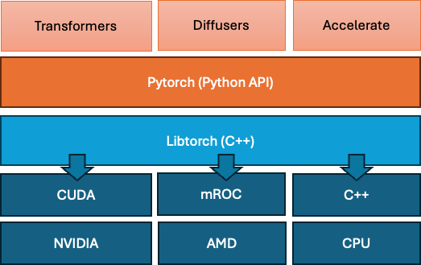

The software stack
To do any kind of machine learning at scale, you need a machine learning library that takes care of interfacing between your high level programming language (almost always Python if you are into niche/alt things Julia or if you are really into punishing yourself R (I tried…)) and low level matrix operations on CPU/GPU.
These machine learning libraries facilitates a few essential things. First, these libraries offer optimal implementations of elementary mathematical operations on data matrices/tensors on CPU or GPU(sums, min, mean, products, dot products etc. etc.). Second these libraries facilitate automatic differentiation. Most libraries have the options to store/compute a gradient (1st derivative wrt some function) value for all parameters that are to be estimated.
Estimating parameters in a model almost always boils down to moving parameters values (intelligently) such that the model does its ‘job’ better or achieves its ‘goal’. The way we define a models’ ‘goal’ is in terms of a ‘loss function’. We’re not going to go into loss functions specifically here, there are plenty resources to learn about those. The loss is generally a function of all parameters in the model. A lot of optimization (though not all) is done by gradient descent, the gradient of the parameters wrt the loss is minimized, because if all parameters have gradient 0 wrt the loss their at a (local) minimum. The brute force way of establishing the gradient for a set of parameter values (still sued in many SEM or statistical software frameworks) is to sequentially move each parameter up, then down a little step, record the change in loss. This takes 2*#-parameters evaluations of the loss function, after which all parameters move in the optimal direction and the process re-starts. A key aspect of any machine learning framework is to use automatic differentiation(Wengert 1964; Griewank 2012) to provide the partial derivatives of the loss function with respect to the individual parameters, in order to speed up optimization greatly (see autodiff on Wikipedia for a fuller explanation). the logic here is that the sign and magnitude of the derivative/gradient tells you which steps to take for optimal gradient descent, to reduce the loss. Automatic differentiation takes twice the compute as a single evaluation of the loss, regardless of the number of parameters involved.
Troughout the book callouts labeled important will highlight key concepts in ML, we don’t have separate ML chapters but the concepts are sprinkled throughout. Studying these topics until you have a conceptual grip on them will make you a better consumer/developer of biological ML models. You don’t have to immediately as they are frequently abstracted away by layers of software and convenience.
The key concepts to study further here are gradient decent and automatic differentiation, which are basically the building blocks of how all deep learning models are trained.
Arguably the four most popular libraries that provide a framework for automatic differentiation, GPU/CPU compute abstraction and reconfigure model elements (attention layers, dense layers, convolutional layers, recurrent networks etc etc) are PyTorch, JAX,tensorflow and keras. These libraries are still quite general, they are able to accommodate a vast universe of models. Build on top of these framework there are libraries like Huggingfaces’ transformers. Huggingface (HF), a company named after an emoji (🤗) and started to develop a chatbot for teens in 2016, at some point pivoted to being the backbone behind language and vision language models and maintain a few powerful libraries that form a top layer over PyTorch,TensorFlow and keras.

We’ll be working with transformers (and a few derivative libraries like trainer and accelerate), when we cannot us the off the shelf models we’ll implement small pieces of code in Pytorch to fit within transformers models. What transformers offers us are highly structured validated implementations of models, of training loops/code of tokenizers (we’ll get into all those). It also directly integrate with all models and dataset hosted on https://huggingface.co. Hosting on HF is free for public models and datasets, though given these can go into the terabytes one wonders how long that can last. When training a model, you can save its weights directly to their hub, from the script. This greatly reduces the friction between model training and deployment.
Under that layer pytorch is a python API that lets you interface with tensors, matrices, their gradients, the full graph of a model containing multiple matrices etc. Under the hood libtorch is the C++ library that then translates (and in some cases complies) those models and graphs into hardware specific languages (so CUDA for NVIDIA GPUs for example) where the actual computation happens. In this course we will work in pytorch directly but at no point will concern ourselves with the lower layers.
See the forest for the trees
Unltimately the exact stack, or framework you use aren’t that important. Once you begin to grasp the models and their estimation, switching between frameworks and languages around those models becomes easier, I used to think “O, I code in R, I cant work with Python” or “I use frequentist SEM models I cant estimate those as neural networks”. While the lower level choices PyTorch or JAX, R or Python are hidden away under high level libraries in parts of this course, it is a good exercise to see the same model represented in different languages and frameworks. The goal here is to begin to cognitively separate the model, from the language and the framework. Look trough the mode descriptions below and the tabs containing the code, in each you will see the same multi-layer perceptron (MLP) across five deep learning frameworks: PyTorch, torch for R, Keras (R), Keras (Python), and JAX. The goal is to help you see their shared architecture.
Our minimal MLP has:
- Input size: 10
- Hidden layer size: 20
- Output size: 1
We’ll describe each matrix and bias term, then express the full model as a symbolic equation.
Matrices and Vectors in the Model
The model uses the following matrices and vectors:
- \(\mathbf{W}_1 \in \mathbb{R}^{10 \times 20}\): First layer’s weight matrix, mapping 10-dimensional input to a 20-dimensional hidden layer.
- \(\mathbf{b}_1 \in \mathbb{R}^{1 \times 20}\): Bias vector added after the first linear transformation (can be broadcasted).
- \(\mathbf{W}_2 \in \mathbb{R}^{20 \times 1}\): Second layer’s weight matrix, mapping the hidden representation to a scalar output.
- \(\mathbf{b}_2 \in \mathbb{R}^{1 \times 1}\): Final bias term (can be treated as a scalar).
- \(\mathbf{x} \in \mathbb{R}^{1 \times 10}\): A single input example (can also be a batch of size \(B\): \(\mathbb{R}^{B \times 10}\)).
Mathematical Equation of the Model
The MLP performs the following sequence of computations:
\[ \hat{y} = \mathbf{x} \mathbf{W}_1 + \mathbf{b}_1 \quad \text{(Linear transformation)} \]
\[ \mathbf{h} = \text{ReLU}(\hat{y}) \quad \text{(Nonlinearity applied elementwise)} \]
\[ \mathbf{o} = \mathbf{h} \mathbf{W}_2 + \mathbf{b}_2 \quad \text{(Final linear layer)} \]
Putting it all together, the full function computed by the MLP is:
\[ f(\mathbf{x}) = \left( \text{ReLU}(\mathbf{x} \mathbf{W}_1 + \mathbf{b}_1) \right) \mathbf{W}_2 + \mathbf{b}_2 \]
This is the same whether in PyTorch, Keras, torch for R, or JAX — only the syntax changes, not the structure.
These scripts then all contain the folloing structural elements related tot the model, and to the optimisatino of the model given data:
Model definition: This is where the architecture of the neural network is specified, including how inputs are transformed through layers to produce outputs. Forward pass: In this step, input data is passed through the model to compute predictions based on the current weights. Loss computation: The model’s predictions are compared to the true target values using a loss function that quantifies the prediction error. Backpropagation: The gradients of the loss with respect to each model parameter are calculated by propagating the error backward through the network. Weight updates: The model’s parameters are adjusted using an optimization algorithm (like stochastic gradient descent) to reduce the loss in future predictions.
import torch
import torch.nn as nn
import torch.optim as optim
# Model
class MLP(nn.Module):
def \_\_init\_\_(self):
super().\_\_init\_\_()
self.net = nn.Sequential(nn.Linear(10, 20), nn.ReLU(), nn.Linear(20, 1))
def forward(self, x):
return self.net(x)
model = MLP()
opt = optim.SGD(model.parameters(), lr=0.01)
loss_fn = nn.MSELoss()
# Training loop
for x, y in data:
pred = model(x)
loss = loss_fn(pred, y)
opt.zero_grad()
loss.backward()
opt.step()library(torch)
# Model
mlp <- nn_module(
initialize = function() {
self$fc1 <- nn_linear(10, 20)
self$fc2 <- nn_linear(20, 1)
},
forward = function(x) {
x %>% self$fc1() %>% nnf_relu() %>% self$fc2()
}
)
model <- mlp()
opt <- optim_sgd(model$parameters, lr = 0.01)
loss_fn <- nn_mse_loss()
# Training loop
for (batch in dataloader) {
x <- batch$x
y <- batch$y
pred <- model(x)
loss <- loss_fn(pred, y)
opt$zero_grad()
loss$backward()
opt$step()
}library(keras)
# Model
model <- keras_model_sequential() %>%
layer_dense(units = 20, activation = "relu", input_shape = 10) %>%
layer_dense(units = 1)
model %>% compile(optimizer = "sgd", loss = "mse")
# Training
model %>% fit(x_train, y_train, epochs = 10)from tensorflow import keras
from tensorflow.keras import layers
# Model
model = keras.Sequential([
layers.Dense(20, activation='relu', input_shape=(10,)),
layers.Dense(1)
])
model.compile(optimizer='sgd', loss='mse')
# Training
model.fit(x_train, y_train, epochs=10)import jax
import jax.numpy as jnp
from jax import grad, jit, random
# Parameters
key = random.PRNGKey(0)
def init_params(key):
k1, k2 = random.split(key)
return {
"W1": random.normal(k1, (10, 20)),
"b1": jnp.zeros(20),
"W2": random.normal(k2, (20, 1)),
"b2": jnp.zeros(1)
}
def forward(params, x):
x = jnp.dot(x, params["W1"]) + params["b1"]
x = jax.nn.relu(x)
return jnp.dot(x, params["W2"]) + params["b2"]
def loss_fn(params, x, y):
pred = forward(params, x)
return jnp.mean((pred - y) ** 2)
@jit
def train_step(params, x, y, lr=0.01):
grads = grad(loss_fn)(params, x, y)
return {k: params[k] - lr * grads[k] for k in params}
params = init_params(key)
# Training loop
for x, y in data:
params = train_step(params, x, y)The models clearly are the same, and the different frameworks/languages vary in their verbosity, in keras in R is only a few lines, many common operations such as mean square error loss (mse) are baked in, while in JAX things are defined more manually. I feel very comfortable with PyTorch myself and it does have a wide user base in the language/sequence/image deep-learing communities which means there is a lot of great code available. Switching form one to the other will make you stumble, but its not as insurmountable as many people believe.